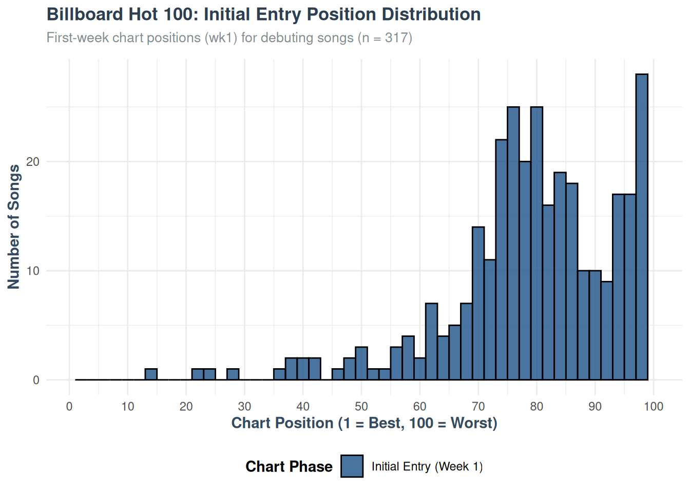
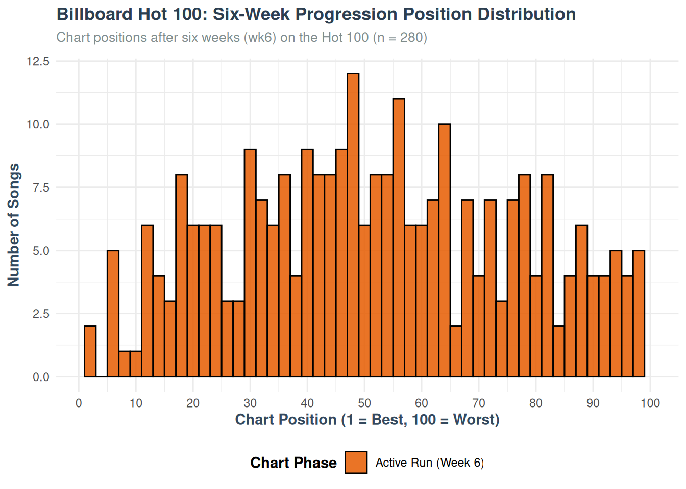
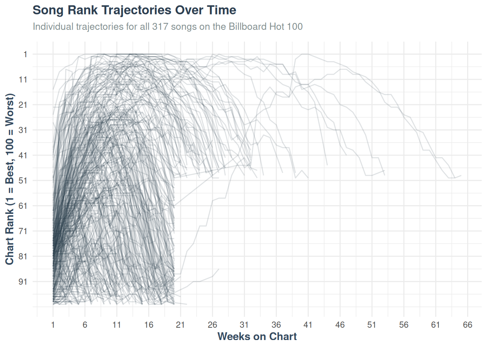
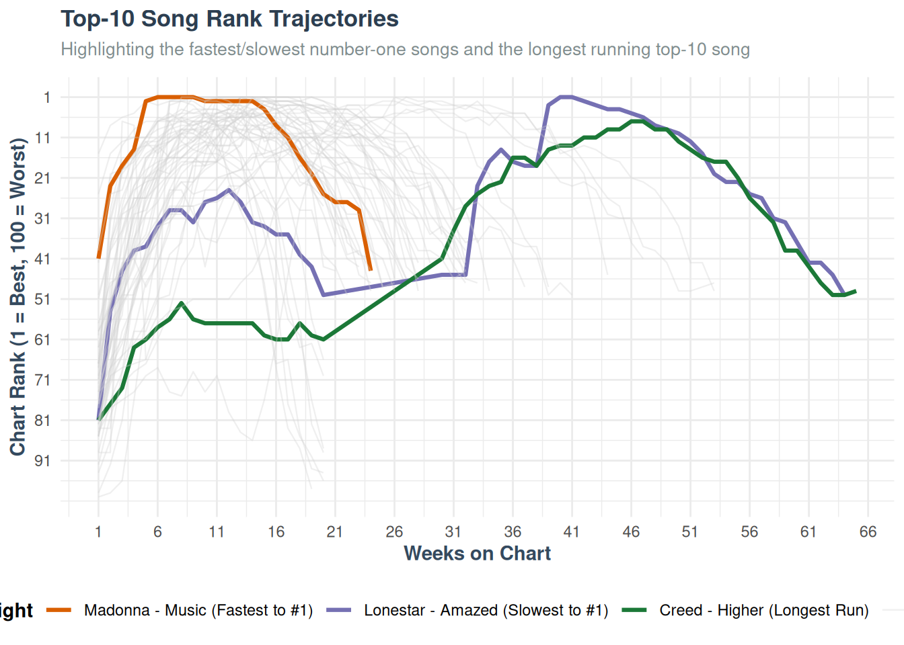
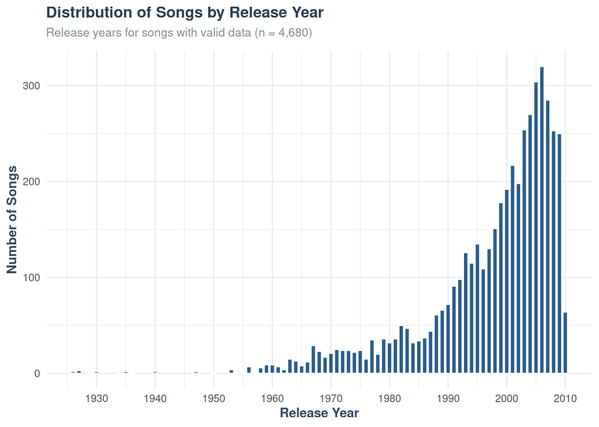
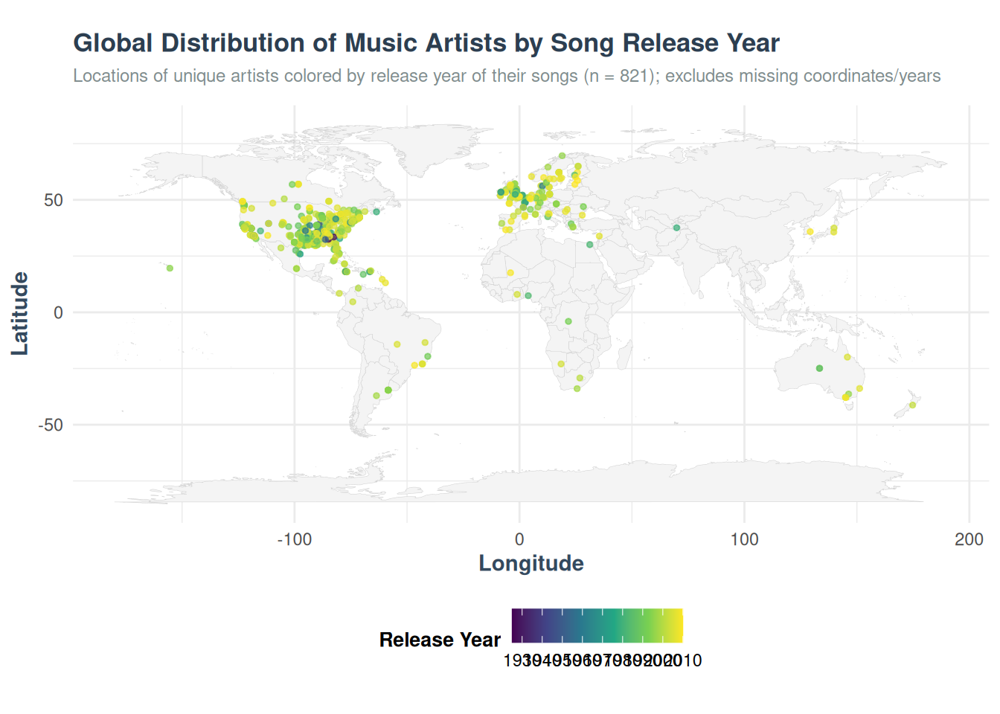

| artist | track | date.entered | wk1 | wk2 | wk3 | wk4 |
|---|---|---|---|---|---|---|
| 2 Pac | Baby Don’t Cry (Keep… | 2000-02-26 | 87 | 82 | 72 | 77 |
| 2Ge+her | The Hardest Part Of … | 2000-09-02 | 91 | 87 | 92 | NA |
| 3 Doors Down | Kryptonite | 2000-04-08 | 81 | 70 | 68 | 67 |
| 3 Doors Down | Loser | 2000-10-21 | 76 | 76 | 72 | 69 |
| 504 Boyz | Wobble Wobble | 2000-04-15 | 57 | 34 | 25 | 17 |
| 98^0 | Give Me Just One Nig… | 2000-08-19 | 51 | 39 | 34 | 26 |
| A*Teens | Dancing Queen | 2000-07-08 | 97 | 97 | 96 | 95 |
| Aaliyah | I Don’t Wanna | 2000-01-29 | 84 | 62 | 51 | 41 |
| Aaliyah | Try Again | 2000-03-18 | 59 | 53 | 38 | 28 |
| Adams, Yolanda | Open My Heart | 2000-08-26 | 76 | 76 | 74 | 69 |
Analyzing Music Data
Introduction & Dataset Preview
We are analyzing Billboard Hot 100 chart data from the year 2000. Below is a preview of the first 10 rows of the dataset, showing the artist, track, entry date, and the weekly rankings for the first four weeks:
Analysis of Entry Dates
Below are the summary statistics for when songs entered the Billboard Hot 100 chart:
Min. 1st Qu. Median Mean 3rd Qu. Max.
"1999-06-05" "2000-02-05" "2000-04-29" "2000-05-03" "2000-08-12" "2000-12-30" Distribution of Chart Ranks
Next, we analyze the distribution of chart ranks at two different points in time: during the first week of entry (Week 1) and after six weeks on the chart (Week 6).
First-Week Chart Rank Distribution
This chart illustrates where songs typically debut on the Hot 100. Lower values indicate higher (better) chart rankings.

Sixth-Week Chart Rank Distribution
By the sixth week, some songs have dropped off the chart, while others have moved up. This chart shows the distribution of ranks for the remaining active songs.

Missing and Present Rankings Analysis
To see how many songs remain on the chart over time, we calculate the number of present (active) and missing (dropped off) rankings for selected weeks:
| Week | Present | Missing |
|---|---|---|
| wk1 | 317 | 0 |
| wk4 | 300 | 17 |
| wk10 | 244 | 73 |
| wk20 | 146 | 171 |
| wk40 | 7 | 310 |
| wk76 | 0 | 317 |
Song Chart Re-entry Analysis
We investigate whether any songs leave the Hot 100 chart and later re-enter it. A song is considered to have re-entered if there is a gap of one or more weeks (recorded as NA) between active chart positions:
| Song Status | Number of Songs |
|---|---|
| Never Re-entered | 302 |
| Re-entered Chart | 15 |
Week 1 vs. Week 6 Rank Comparison
We compare each song’s Week 1 (debut) rank and Week 6 rank. We categorize songs based on whether their chart rank improved (rank number decreased), stayed the same, got worse (rank number increased), or if they were missing (dropped off the chart) by Week 6:
| Week 6 Status | Number of Songs |
|---|---|
| Got Worse | 27 |
| Improved | 251 |
| Missing by Week 6 | 37 |
| Stayed the Same | 2 |
For songs that remained on the chart in both Week 1 and Week 6, we calculate the median change in rank. Note that positive numbers for positions climbed represent improvement (e.g., climbing from rank 80 to rank 53 is +27 positions):
| Median Positions Climbed (wk1 - wk6) | Median Numerical Rank Change (wk6 - wk1) |
|---|---|
| 27 | -27 |
Song Rankings Over Time
We reshape the billboard dataset from wide format to long format, converting all the week columns (wk1 to wk76) into two columns: week and rank. We then plot the trajectory of each song’s ranking over time:

Song-Level Summary and Notable Achievements
We aggregate the reshaped billboard dataset to create a song-level summary. For each track, we identify its debut (first) rank, its best (peak) rank, the first week it reached its peak rank, and the total number of weeks it spent active on the Hot 100 chart.
Here is a preview of the first 10 songs in this summary:
| Artist | Track | First Rank | Best Rank | Week of Best Rank | Total Weeks |
|---|---|---|---|---|---|
| 2 Pac | Baby Don’t Cry (Keep… | 87 | 72 | 3 | 7 |
| 2Ge+her | The Hardest Part Of … | 91 | 87 | 2 | 3 |
| 3 Doors Down | Kryptonite | 81 | 3 | 32 | 53 |
| 3 Doors Down | Loser | 76 | 55 | 7 | 20 |
| 504 Boyz | Wobble Wobble | 57 | 17 | 4 | 18 |
| 98^0 | Give Me Just One Nig… | 51 | 2 | 7 | 20 |
| A*Teens | Dancing Queen | 97 | 95 | 4 | 5 |
| Aaliyah | I Don’t Wanna | 84 | 35 | 6 | 20 |
| Aaliyah | Try Again | 59 | 1 | 14 | 32 |
| Adams, Yolanda | Open My Heart | 76 | 57 | 9 | 20 |
Notable Top-10 Song Achievements
Based on this summary, we identify three notable achievements among songs that reached the Top-10: * The Fastest Song to Reach Number One: The song that reached the #1 spot in the fewest weeks. * The Slowest Song to Reach Number One: The song that reached the #1 spot in the most weeks. * The Top-10 Song with the Longest Chart Run: The track that peaked in the top-10 and logged the most total weeks on the chart.
| Category | Artist | Track | First Rank | Best Rank | Week of Best Rank | Total Weeks |
|---|---|---|---|---|---|---|
| Fastest to reach #1 | Madonna | Music | 41 | 1 | 6 | 24 |
| Slowest to reach #1 | Lonestar | Amazed | 81 | 1 | 40 | 55 |
| Longest chart run (Top-10) | Creed | Higher | 81 | 7 | 46 | 57 |
Plotting Top-10 Song Trajectories
Below, we filter the reshaped dataset to include only songs that reached the Top-10 at some point during their run. We plot their trajectories in gray, and highlight our three notable songs in distinct colors to compare their journeys on the chart:

Reading External Music Data
Finally, we load the external music.csv dataset using readr::read_csv() (with column types messaging suppressed) and print the resulting tibble:
# A tibble: 10,000 × 35
artist.familiarity artist.hotttnesss artist.id artist.latitude
<dbl> <dbl> <chr> <dbl>
1 0.582 0.402 ARD7TVE1187B99BFB1 0
2 0.631 0.417 ARMJAGH1187FB546F3 35.1
3 0.487 0.343 ARKRRTF1187B9984DA 0
4 0.630 0.454 AR7G5I41187FB4CE6C 0
5 0.651 0.402 ARXR32B1187FB57099 0
6 0.535 0.385 ARKFYS91187B98E58F 0
7 0.556 0.262 ARD0S291187B9B7BF5 0
8 0.801 0.606 AR10USD1187B99F3F1 0
9 0.427 0.332 AR8ZCNI1187B9A069B 0
10 0.551 0.423 ARNTLGG11E2835DDB9 0
# ℹ 9,990 more rows
# ℹ 31 more variables: artist.location <dbl>, artist.longitude <dbl>,
# artist.name <chr>, artist.similar <dbl>, artist.terms <chr>,
# artist.terms_freq <dbl>, release.id <dbl>, release.name <dbl>,
# song.artist_mbtags <dbl>, song.artist_mbtags_count <dbl>,
# song.bars_confidence <dbl>, song.bars_start <dbl>,
# song.beats_confidence <dbl>, song.beats_start <dbl>, song.duration <dbl>, …Structure of Artist Columns
Below, we select only the columns containing artist-related information from the music dataset and display their structure, including column types and sample values, using dplyr::glimpse():
Rows: 10,000
Columns: 12
$ artist.familiarity <dbl> 0.58179377, 0.63063004, 0.48735679, 0.6303823…
$ artist.hotttnesss <dbl> 0.4019975, 0.4174996, 0.3434284, 0.4542312, 0…
$ artist.id <chr> "ARD7TVE1187B99BFB1", "ARMJAGH1187FB546F3", "…
$ artist.latitude <dbl> 0.00000, 35.14968, 0.00000, 0.00000, 0.00000,…
$ artist.location <dbl> 0, 0, 0, 0, 0, 0, 0, 0, 0, 0, 0, 0, 0, 0, 0, …
$ artist.longitude <dbl> 0.00000, -90.04892, 0.00000, 0.00000, 0.00000…
$ artist.name <chr> "Casual", "The Box Tops", "Sonora Santanera",…
$ artist.similar <dbl> 0, 0, 0, 0, 0, 0, 0, 0, 0, 0, 0, 0, 0, 0, 0, …
$ artist.terms <chr> "hip hop", "blue-eyed soul", "salsa", "pop ro…
$ artist.terms_freq <dbl> 1.0000000, 1.0000000, 1.0000000, 0.9885839, 0…
$ song.artist_mbtags <dbl> 0, 0, 0, 0, 0, 0, 0, 0, 0, 0, 0, 0, 0, 0, 0, …
$ song.artist_mbtags_count <dbl> 0, 1, 0, 1, 0, 0, 0, 0, 0, 0, 0, 0, 0, 0, 1, …Explanation of Artist Familiarity and Hotttnesss
Based on the documentation for the Million Song Dataset: * artist.familiarity: This column contains a numerical estimate (ranging from 0 to 1) indicating how “familiar” or well-known the artist is to the general listening public. It is calculated by The Echo Nest (now part of Spotify) using aggregated statistics such as the artist’s historical listening counts, playlist appearances, and web metadata. * artist.hotttnesss: This column contains a numerical estimate (ranging from 0 to 1) measuring the artist’s current popularity or “buzz” at the time the dataset was compiled. Unlike familiarity—which reflects long-term recognition—“hotttnesss” represents short-term momentum, capturing social media attention, web search trends, and recent radio play.
Summary Statistics for Key Variables
Below, we compute the summary statistics—including the minimum, 1st quartile (Q1), median, mean, 3rd quartile (Q3), and maximum—for artist.familiarity, artist.hotttnesss, song.year, and song.tempo using a reshaped summary table:
| Variable | Min | Q1 | Median | Mean | Q3 | Max |
|---|---|---|---|---|---|---|
| artist.familiarity | 0 | 0.4675700 | 0.5635836 | 0.5652295 | 0.6680202 | 1.000000 |
| artist.hotttnesss | 0 | 0.3252656 | 0.3807423 | 0.3855522 | 0.4538581 | 1.082503 |
| song.tempo | 0 | 96.9595000 | 120.1565000 | 122.9009133 | 144.0067500 | 262.828000 |
| song.year | 0 | 0.0000000 | 0.0000000 | 934.7046000 | 2000.0000000 | 2010.000000 |
Observations
- Data Quality Issue for
song.year: Note thatsong.yearhas a minimum, Q1, and median of0. This indicates a significant portion of missing year values that are coded as0in the dataset. - Range of
artist.hotttnesss: The maximum value forartist.hotttnesssis slightly above1(at1.08), indicating minor outliers in the algorithm’s output metrics.
Song Release Year Distribution
Below, we filter out songs with missing release years (where song.year == 0) and plot the distribution of release years for the remaining tracks. The total number of valid songs is dynamically computed and included in the chart’s subtitle:

Preview of Human-Readable Song Data
Below, we select and format the most human-readable columns of the music dataset, presenting a preview table of the first 10 rows:
| Artist Name | Location | Coordinates | Genre | Familiarity | Hotness | Song Title | Year |
|---|---|---|---|---|---|---|---|
| Casual | 0 | 0, 0 | hip hop | 0.5817938 | 0.4019975 | 0 | 0 |
| The Box Tops | 0 | 35.1497, -90.0489 | blue-eyed soul | 0.6306300 | 0.4174996 | 0 | 1969 |
| Sonora Santanera | 0 | 0, 0 | salsa | 0.4873568 | 0.3434284 | 0 | 0 |
| Adam Ant | 0 | 0, 0 | pop rock | 0.6303823 | 0.4542312 | 0 | 1982 |
| Gob | 0 | 0, 0 | pop punk | 0.6510457 | 0.4017237 | 0 | 2007 |
| Jeff And Sheri Easter | 0 | 0, 0 | southern gospel | 0.5352927 | 0.3854706 | 0 | 0 |
| Rated R | 0 | 0, 0 | breakbeat | 0.5564956 | 0.2619412 | 0 | 0 |
| Tweeterfriendly Music | 0 | 0, 0 | post-hardcore | 0.8011364 | 0.6055071 | 0 | 0 |
| Planet P Project | 0 | 0, 0 | new wave | 0.4266679 | 0.3322757 | 0 | 1984 |
| Clp | 0 | 0, 0 | breakcore | 0.5505137 | 0.4227056 | 0 | 0 |
Analyzing Placeholders and Missing Data
Many columns in this dataset contain placeholder values (coded as 0) rather than typical NA values to represent missing data. Below, we count the number of rows containing these placeholders in artist.location, release.name, song.title, song.year, artist.familiarity, and artist.hotttnesss:
| Column Name | Placeholder Count | Total Rows | Percentage (%) |
|---|---|---|---|
| artist.location | 9999 | 10000 | 99.99 |
| release.name | 9989 | 10000 | 99.89 |
| song.title | 9992 | 10000 | 99.92 |
| song.year | 5320 | 10000 | 53.20 |
| artist.familiarity | 24 | 10000 | 0.24 |
| artist.hotttnesss | 496 | 10000 | 4.96 |
Artist Coordinate Analysis (Usable vs. Placeholder)
Artist geographic locations are stored as latitude and longitude coordinates. We define coordinates as placeholder if both the latitude and longitude are exactly 0, and usable if at least one coordinate is non-zero. Below, we count the number of placeholder vs. usable coordinates at both the unique artist level and the song/record level:
| Level | Coordinate Status | Count | Percentage (%) |
|---|---|---|---|
| Unique Artist Level | Placeholder (Both 0) | 2830 | 63.78 |
| Unique Artist Level | Usable Coordinates | 1607 | 36.22 |
| Song/Record Level | Placeholder (Both 0) | 6258 | 62.58 |
| Song/Record Level | Usable Coordinates | 3742 | 37.42 |
Geographic Distribution of Artists by Song Release Year
Below, we visualize the geographic locations of music artists on a world map, color-coded by the release year of their songs. We filter out artists with placeholder coordinates (where both latitude and longitude are 0) and those with missing song release years (where song.year == 0). The remaining artist locations are plotted as points colored by the release year (using the viridis color scale) on a world map background retrieved from the maps package:
